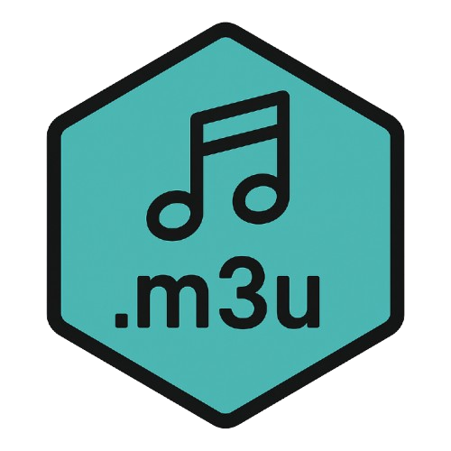

M3U PLAYLIST TOOLKIT
mu3u
mu3u is an M3U playlist builder, editor, and viewer library with tag validation, stream testing, and embedded metadata inspection for audio and video playlists.
BUILD // EDIT // VALIDATE // TEST
M3U playlist workbench
LOCAL FILESEXTINFEXPORTSTREAM TEST SUBJECT TO CORS
Entries0
Valid URLs0
Groups0
Duplicates0
| # | Title | URL | Duration | Tags | Validation |
|---|
A failed browser fetch does not necessarily mean a stream is offline; CORS, authentication, redirects, TLS, and browser media policy can block otherwise reachable streams. Native mu3u can use requests/FFmpeg.